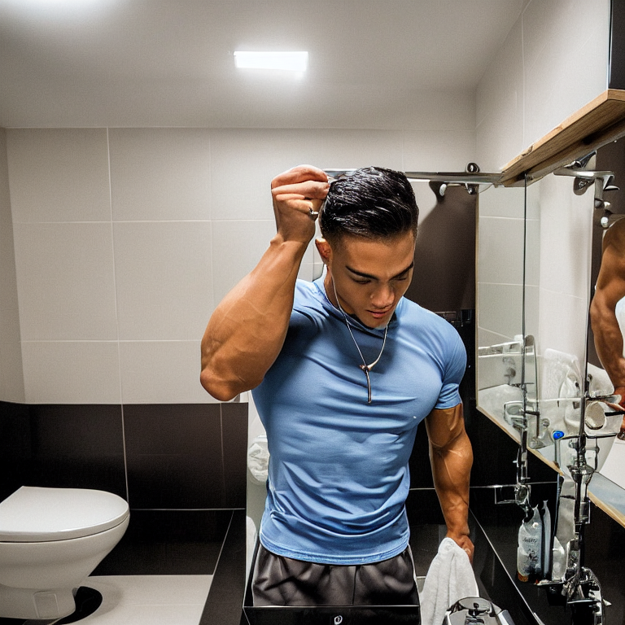

原圖

關鍵字
正面:a young athletic man, strong muscular bodybuilder, fit physique,
wearing a light blue t-shirt, bathroom mirror selfie, high quality, sharp focus
反面:blurry, low quality, deformed, bad anatomy, disfigured
生成圖

流程圖
心得
一開始跑一張圖要跑三個小時，以為是電腦效能問題，後面發現是生成出來的圖片高達5048像素
後來查了AI後多加了一個像素的縮放，把像素壓在768*768後生成一張紙需要10秒，雖然前面因為
一次要跑三小時所以做得很不舒服，但是調整完之後就覺得生成圖片蠻好玩的，但是我比較喜歡製作index
網頁的過程，而且提示詞對圖片的引響很大，製作圖片的時候一直變成人不人鬼不鬼的，嘗試了大概30~40次才成功。